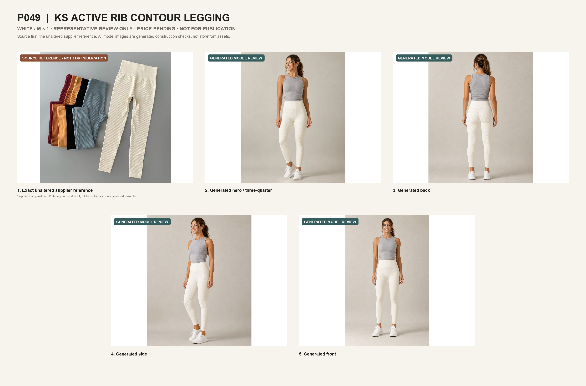
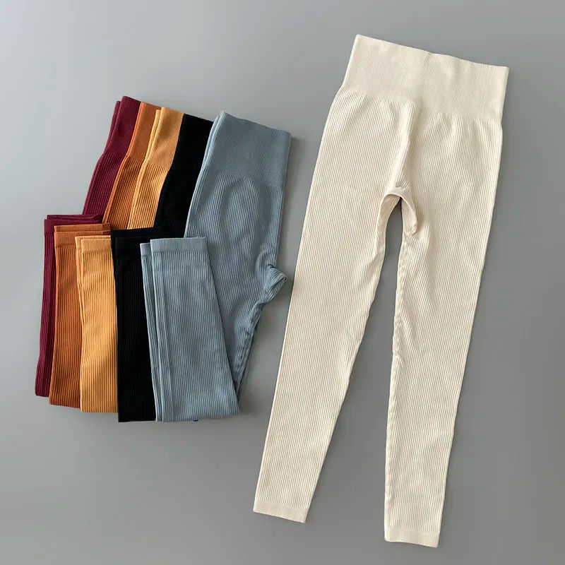
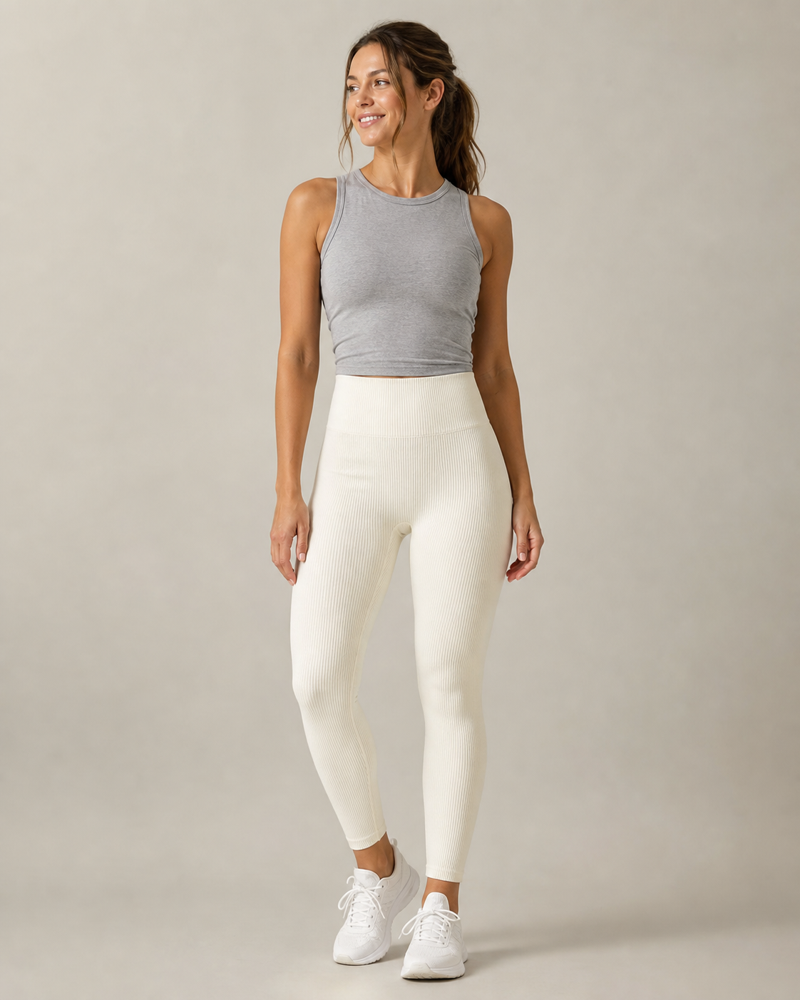
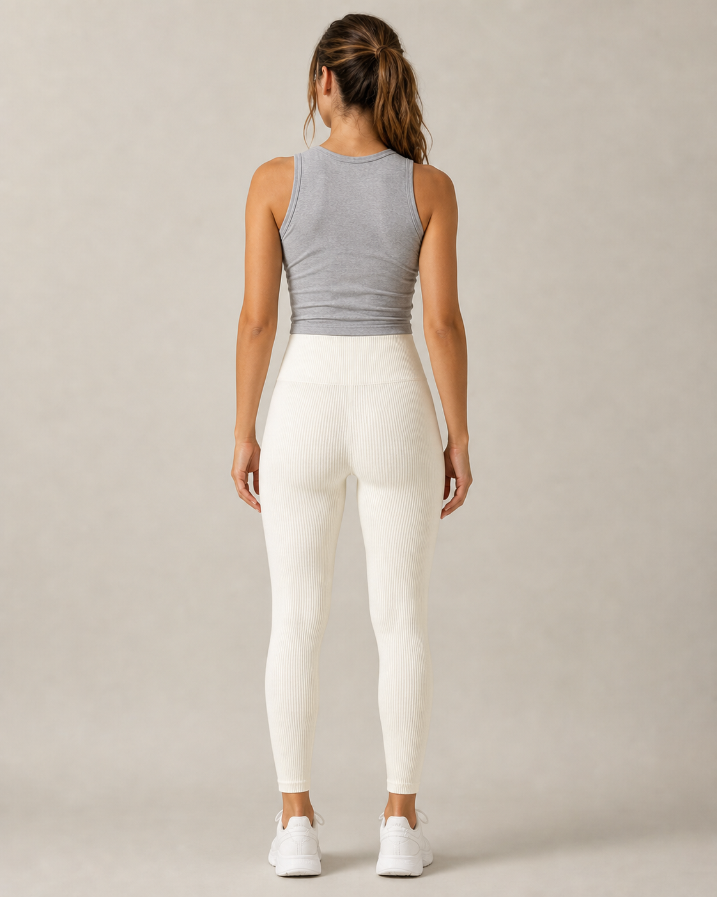
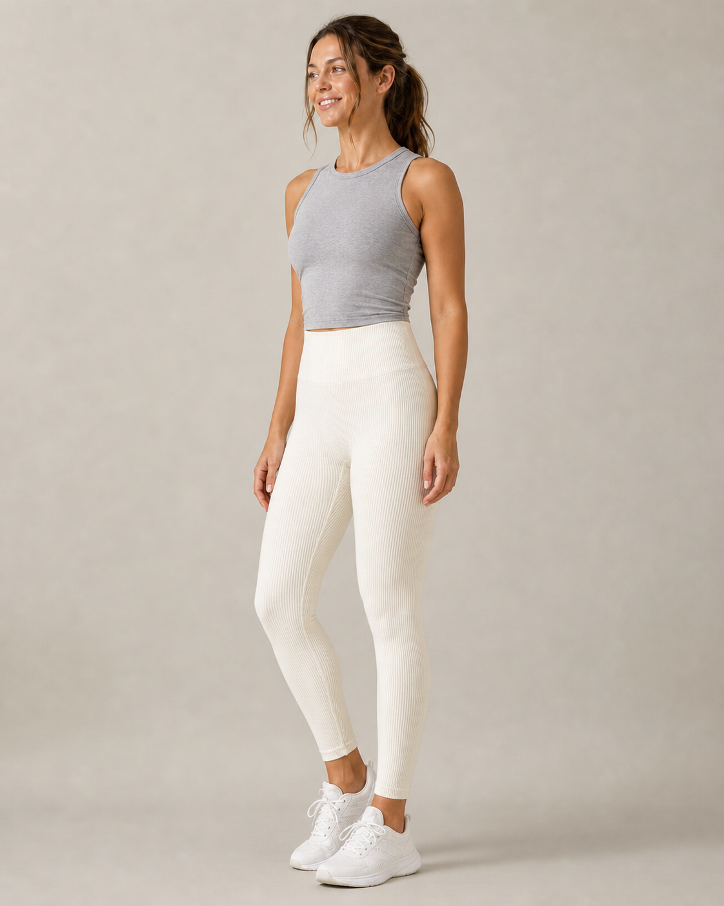
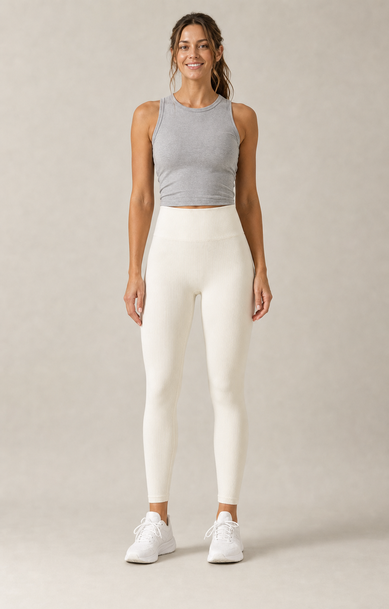
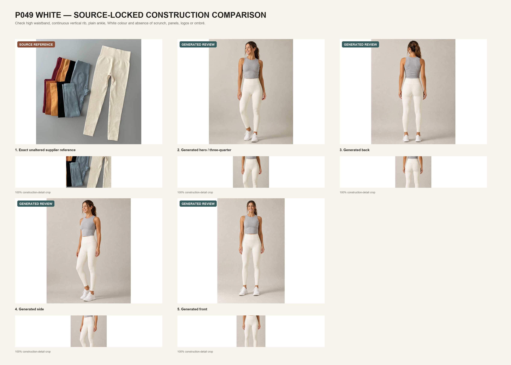

Hidden review route · P049 · representative only · draft only
KS Active Rib Contour Legging
One source-locked White representative is ready for visual inspection. It is unlinked, non-indexed, non-purchasable and excluded from every public catalogue, collection, search, sitemap and structured-data surface.
Review contact sheet
The source image comes first unchanged. Its White legging at right is the construction authority; the folded colours visible in that supplier composition are not selected P049 variants.

1. Exact source reference
This exact unaltered supplier listing asset is shown first as required. A distinct Drive ombré/bum-contour candidate was rejected because it is structurally different.

2–5. Generated model review
The following four views preserve the locked high straight waistband, continuous vertical rib, plain full-length ankle, White colour and absence of a logo, scrunch, panel, ombré or added seam.




Source-to-model comparison
Compare the full silhouette and the detail crops before approving the representative product and working name.
